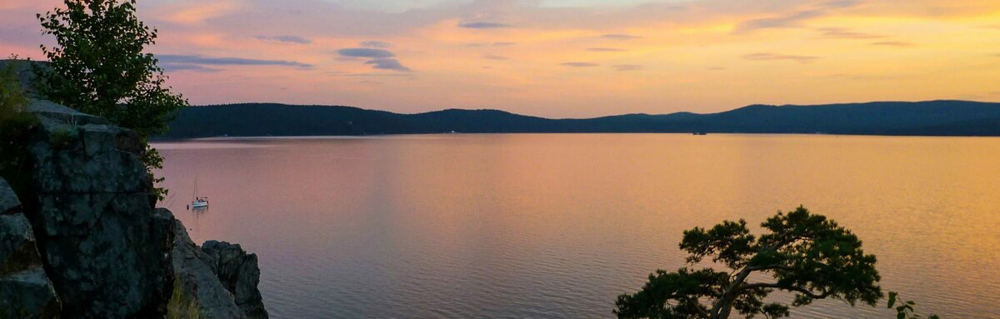
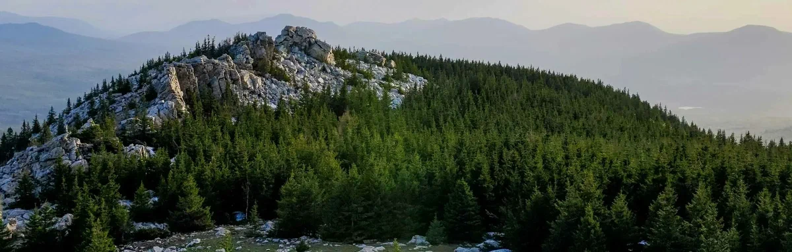

Озеро • отдых • Миасс
Тургояк
Одно из самых чистых озёр России, место летнего отдыха, прогулок и одной из самых известных панорам Южного Урала.
Описание
Исследуй 74 регион через районы, города, озёра и национальные парки. Запускай экспедицию, открывай красивые места на карте и собирай свой маршрут по Южному Уралу.
В одном проекте собраны районы, города, озёра, исторические места и сценарий экспедиции по главным точкам области.
Челябинская область — это Южный Урал, где сочетаются горные хребты, леса, степи, озёра и крупные города. Здесь находятся известные природные территории, туристические маршруты и исторические объекты.
Витрина самых атмосферных и узнаваемых мест региона — с быстрым переходом на карту и большой карточкой места.


Тематические маршруты для знакомства с регионом.
Таганай → Златоуст → Куса. Маршрут для знакомства с горными ландшафтами Южного Урала.
Тургояк → Увильды → Чебаркуль. Маршрут по главным озёрам области.
Аркаим → Игнатьевская пещера → Остров Веры. Маршрут по известным историческим объектам.
На карте отображаются районы, города, озёра, реки и достопримечательности Челябинской области.
Крупные города Челябинской области и их особенности.
Озёра, реки, парки, археологические и природные объекты Южного Урала.
| Город | Население | Особенность |
|---|---|---|
| Челябинск | 1.17 млн | Столица |
| Магнитогорск | 408 тыс | Металлургия |
| Златоуст | 157 тыс | Горы |
Горы, озёра, леса Южного Урала
Маршруты, походы, экспедиции
Аркаим и древние памятники